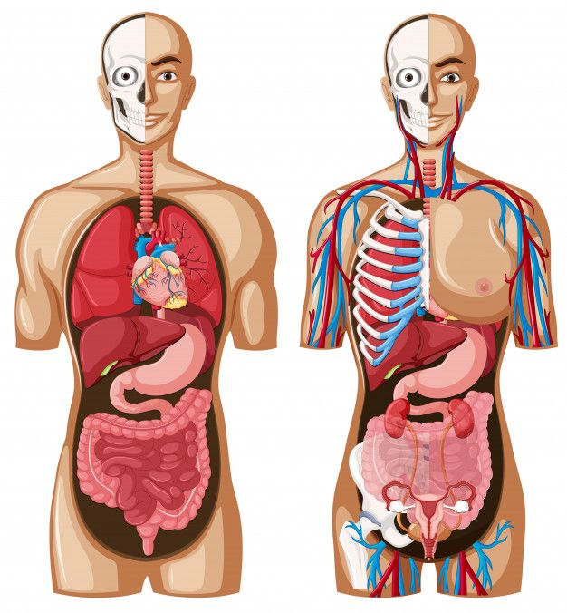

O que é anatomia humana?
Anatomia humana é a ciência que estuda a estrutura do corpo humano, incluindo a forma, localização e relação entre os órgãos e sistemas. Ela se divide em diferentes áreas, como:
- Anatomia macroscópica: Estruturas visíveis a olho nu (ossos, músculos, órgãos).
- Anatomia microscópica: Estruturas em nível celular e tecidual (histologia).
- Anatomia sistêmica: Estudo dos sistemas do corpo (nervoso, respiratório, etc.).
- Anatomia regional: Estrutura por regiões específicas (cabeça, tronco, membros).
Essa área é fundamental para a medicina, fisioterapia e outras ciências da saúde, ajudando a entender o funcionamento e a organização do corpo humano.
